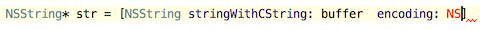

The SmartType code completion helps you find methods and variables that are suitable in the current context, by analyzing the expected type of the whole expression. So doing, AppCode pinpoints the top five most suitable results and highlights them on the green background.
For example, type

and press &shortcut:SmartTypeCompletion;.
The SmartType completion also works after the return keyword, in an assignment, in an argument list of a send message expression, and other places.